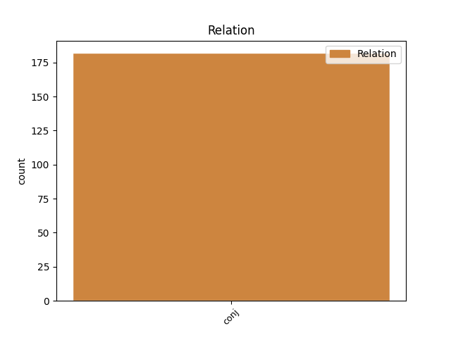
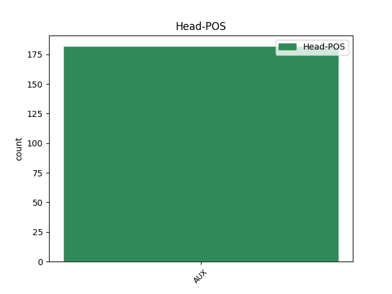
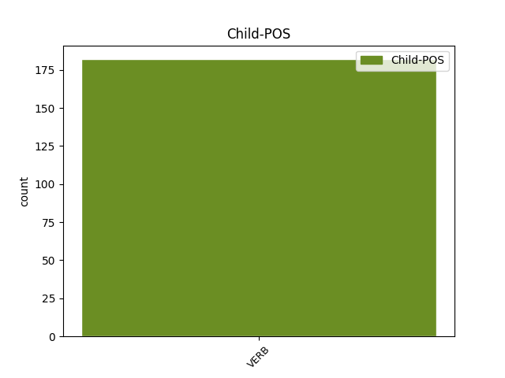

Distribution of features within this leaf



Agreement Rules sorted by frequency.
- When the dependent token is the conjunct(conj) of the head token, and the head token is AUX and the dependent token is VERB.
1 Koneckonců _ _ _ _ 0 _ _ _
2 , _ _ _ _ 0 _ _ _
3 jsem být AUX VB-S---1P-AA--- Mood=Ind|Number=Sing|Person=1|Polarity=Pos|Tense=Pres|VerbForm=Fin|Voice=Act 0 _ _ _
4 realista _ _ _ _ 0 _ _ _
5 a _ _ _ _ 0 _ _ _
6 hříčkám _ _ _ _ 0 _ _ _
7 podvědomí _ _ _ _ 0 _ _ _
8 nevěřím věřit VERB VB-S---1P-NA--- Mood=Ind|Number=Sing|Person=1|Polarity=Neg|Tense=Pres|VerbForm=Fin|Voice=Act 3 conj _ SpaceAfter=No
9 . _ _ _ _ 0 _ _ _
Disagree Examples:
1 Měl _ _ _ _ 0 _ _ _
2 jsem _ _ _ _ 0 _ _ _
3 krátce _ _ _ _ 0 _ _ _
4 po _ _ _ _ 0 _ _ _
5 svatbě _ _ _ _ 0 _ _ _
6 , _ _ _ _ 0 _ _ _
7 zařizoval _ _ _ _ 0 _ _ _
8 jsem _ _ _ _ 0 _ _ _
9 si _ _ _ _ 0 _ _ _
10 byt _ _ _ _ 0 _ _ _
11 , _ _ _ _ 0 _ _ _
12 měli _ _ _ _ 0 _ _ _
13 jsme být AUX VB-P---1P-AA--- Mood=Ind|Number=Plur|Person=1|Polarity=Pos|Tense=Pres|VerbForm=Fin|Voice=Act 0 _ _ _
14 malé _ _ _ _ 0 _ _ _
15 dítě _ _ _ _ 0 _ _ _
16 , _ _ _ _ 0 _ _ _
17 a _ _ _ _ 0 _ _ _
18 tak _ _ _ _ 0 _ _ _
19 se _ _ _ _ 0 _ _ _
20 mi _ _ _ _ 0 _ _ _
21 tohle _ _ _ _ 0 _ _ _
22 místo _ _ _ _ 0 _ _ _
23 v _ _ _ _ 0 _ _ _
24 nejisté _ _ _ _ 0 _ _ _
25 době _ _ _ _ 0 _ _ _
26 zdálo zdát VERB VpNS----R-AA--- Gender=Neut|Number=Sing|Polarity=Pos|Tense=Past|VerbForm=Part|Voice=Act 13 conj _ _
27 jako _ _ _ _ 0 _ _ _
28 zázračný _ _ _ _ 0 _ _ _
29 přístav _ _ _ _ 0 _ _ _
30 . _ _ _ _ 0 _ _ _
1 Nikomu _ _ _ _ 0 _ _ _
2 jsem být AUX VB-S---1P-AA--- Mood=Ind|Number=Sing|Person=1|Polarity=Pos|Tense=Pres|VerbForm=Fin|Voice=Act 0 _ _ _
3 to _ _ _ _ 0 _ _ _
4 ještě _ _ _ _ 0 _ _ _
5 nevyprávěla _ _ _ _ 0 _ _ _
6 a _ _ _ _ 0 _ _ _
7 asi _ _ _ _ 0 _ _ _
8 ani _ _ _ _ 0 _ _ _
9 nebudu být VERB VB-S---1F-NA--- Mood=Ind|Number=Sing|Person=1|Polarity=Neg|Tense=Fut|VerbForm=Fin|Voice=Act 2 conj _ SpaceAfter=No
10 , _ _ _ _ 0 _ _ _
11 protože _ _ _ _ 0 _ _ _
12 by _ _ _ _ 0 _ _ _
13 mi _ _ _ _ 0 _ _ _
14 vyčetl _ _ _ _ 0 _ _ _
15 , _ _ _ _ 0 _ _ _
16 že _ _ _ _ 0 _ _ _
17 moralizuji _ _ _ _ 0 _ _ _
18 . _ _ _ _ 0 _ _ _
1 Nevím _ _ _ _ 0 _ _ _
2 , _ _ _ _ 0 _ _ _
3 co _ _ _ _ 0 _ _ _
4 se _ _ _ _ 0 _ _ _
5 stalo _ _ _ _ 0 _ _ _
6 s _ _ _ _ 0 _ _ _
7 turisty _ _ _ _ 0 _ _ _
8 , _ _ _ _ 0 _ _ _
9 kteří _ _ _ _ 0 _ _ _
10 přihlíželi _ _ _ _ 0 _ _ _
11 jejich _ _ _ _ 0 _ _ _
12 zápasu _ _ _ _ 0 _ _ _
13 o _ _ _ _ 0 _ _ _
14 život _ _ _ _ 0 _ _ _
15 , _ _ _ _ 0 _ _ _
16 asi _ _ _ _ 0 _ _ _
17 dali _ _ _ _ 0 _ _ _
18 uspokojeně _ _ _ _ 0 _ _ _
19 své _ _ _ _ 0 _ _ _
20 fotoaparáty _ _ _ _ 0 _ _ _
21 do _ _ _ _ 0 _ _ _
22 pouzder _ _ _ _ 0 _ _ _
23 - _ _ _ _ 0 _ _ _
24 budou být AUX VB-P---3F-AA--- Mood=Ind|Number=Plur|Person=3|Polarity=Pos|Tense=Fut|VerbForm=Fin|Voice=Act 0 _ _ _
25 mít _ _ _ _ 0 _ _ _
26 o _ _ _ _ 0 _ _ _
27 čem _ _ _ _ 0 _ _ _
28 vyprávět _ _ _ _ 0 _ _ _
29 , _ _ _ _ 0 _ _ _
30 něco _ _ _ _ 0 _ _ _
31 takového _ _ _ _ 0 _ _ _
32 se _ _ _ _ 0 _ _ _
33 nevidí vidět VERB VB-S---3P-NA--- Mood=Ind|Number=Sing|Person=3|Polarity=Neg|Tense=Pres|VerbForm=Fin|Voice=Act 24 conj _ _
34 každý _ _ _ _ 0 _ _ _
35 den _ _ _ _ 0 _ _ _
36 ! _ _ _ _ 0 _ _ _
1 Leželi _ _ _ _ 0 _ _ _
2 jsem _ _ _ _ 0 _ _ _
3 na _ _ _ _ 0 _ _ _
4 tom _ _ _ _ 0 _ _ _
5 chlapci _ _ _ _ 0 _ _ _
6 já _ _ _ _ 0 _ _ _
7 a _ _ _ _ 0 _ _ _
8 dvě _ _ _ _ 0 _ _ _
9 sestry _ _ _ _ 0 _ _ _
10 , _ _ _ _ 0 _ _ _
11 snažili _ _ _ _ 0 _ _ _
12 jsme být AUX VB-P---1P-AA--- Mood=Ind|Number=Plur|Person=1|Polarity=Pos|Tense=Pres|VerbForm=Fin|Voice=Act 0 _ _ _
13 se _ _ _ _ 0 _ _ _
14 ho _ _ _ _ 0 _ _ _
15 upoutat _ _ _ _ 0 _ _ _
16 k _ _ _ _ 0 _ _ _
17 lůžku _ _ _ _ 0 _ _ _
18 , _ _ _ _ 0 _ _ _
19 potřeboval potřebovat VERB VpMS----R-AA--- Animacy=Anim|Gender=Masc|Number=Sing|Polarity=Pos|Tense=Past|VerbForm=Part|Voice=Act 12 conj _ _
20 výplachy _ _ _ _ 0 _ _ _
21 žaludku _ _ _ _ 0 _ _ _
22 a _ _ _ _ 0 _ _ _
23 tak _ _ _ _ 0 _ _ _
24 dál _ _ _ _ 0 _ _ _
25 , _ _ _ _ 0 _ _ _
26 nemohli _ _ _ _ 0 _ _ _
27 jsme _ _ _ _ 0 _ _ _
28 ho _ _ _ _ 0 _ _ _
29 zvládnout _ _ _ _ 0 _ _ _
30 , _ _ _ _ 0 _ _ _
31 to _ _ _ _ 0 _ _ _
32 dítě _ _ _ _ 0 _ _ _
33 mělo _ _ _ _ 0 _ _ _
34 ve _ _ _ _ 0 _ _ _
35 svých _ _ _ _ 0 _ _ _
36 halucinacích _ _ _ _ 0 _ _ _
37 neskutečnou _ _ _ _ 0 _ _ _
38 sílu _ _ _ _ 0 _ _ _
39 , _ _ _ _ 0 _ _ _
40 přítel _ _ _ _ 0 _ _ _
41 stále _ _ _ _ 0 _ _ _
42 plakal _ _ _ _ 0 _ _ _
43 , _ _ _ _ 0 _ _ _
44 hryzal _ _ _ _ 0 _ _ _
45 si _ _ _ _ 0 _ _ _
46 pěsti _ _ _ _ 0 _ _ _
47 , _ _ _ _ 0 _ _ _
48 dítě _ _ _ _ 0 _ _ _
49 občas _ _ _ _ 0 _ _ _
50 úpělo _ _ _ _ 0 _ _ _
51 " _ _ _ _ 0 _ _ _
52 Prosím _ _ _ _ 0 _ _ _
53 , _ _ _ _ 0 _ _ _
54 prosím _ _ _ _ 0 _ _ _
55 , _ _ _ _ 0 _ _ _
56 tatínku _ _ _ _ 0 _ _ _
57 " _ _ _ _ 0 _ _ _
58 a _ _ _ _ 0 _ _ _
59 my _ _ _ _ 0 _ _ _
60 jsme _ _ _ _ 0 _ _ _
61 , _ _ _ _ 0 _ _ _
62 tekly _ _ _ _ 0 _ _ _
63 nám _ _ _ _ 0 _ _ _
64 slzy _ _ _ _ 0 _ _ _
65 všem _ _ _ _ 0 _ _ _
66 . _ _ _ _ 0 _ _ _
67 . _ _ _ _ 0 _ _ _
68 . _ _ _ _ 0 _ _ _
1 Leželi _ _ _ _ 0 _ _ _
2 jsem _ _ _ _ 0 _ _ _
3 na _ _ _ _ 0 _ _ _
4 tom _ _ _ _ 0 _ _ _
5 chlapci _ _ _ _ 0 _ _ _
6 já _ _ _ _ 0 _ _ _
7 a _ _ _ _ 0 _ _ _
8 dvě _ _ _ _ 0 _ _ _
9 sestry _ _ _ _ 0 _ _ _
10 , _ _ _ _ 0 _ _ _
11 snažili _ _ _ _ 0 _ _ _
12 jsme _ _ _ _ 0 _ _ _
13 se _ _ _ _ 0 _ _ _
14 ho _ _ _ _ 0 _ _ _
15 upoutat _ _ _ _ 0 _ _ _
16 k _ _ _ _ 0 _ _ _
17 lůžku _ _ _ _ 0 _ _ _
18 , _ _ _ _ 0 _ _ _
19 potřeboval _ _ _ _ 0 _ _ _
20 výplachy _ _ _ _ 0 _ _ _
21 žaludku _ _ _ _ 0 _ _ _
22 a _ _ _ _ 0 _ _ _
23 tak _ _ _ _ 0 _ _ _
24 dál _ _ _ _ 0 _ _ _
25 , _ _ _ _ 0 _ _ _
26 nemohli _ _ _ _ 0 _ _ _
27 jsme být AUX VB-P---1P-AA--- Mood=Ind|Number=Plur|Person=1|Polarity=Pos|Tense=Pres|VerbForm=Fin|Voice=Act 0 _ _ _
28 ho _ _ _ _ 0 _ _ _
29 zvládnout _ _ _ _ 0 _ _ _
30 , _ _ _ _ 0 _ _ _
31 to _ _ _ _ 0 _ _ _
32 dítě _ _ _ _ 0 _ _ _
33 mělo mít VERB VpNS----R-AA--- Gender=Neut|Number=Sing|Polarity=Pos|Tense=Past|VerbForm=Part|Voice=Act 27 conj _ _
34 ve _ _ _ _ 0 _ _ _
35 svých _ _ _ _ 0 _ _ _
36 halucinacích _ _ _ _ 0 _ _ _
37 neskutečnou _ _ _ _ 0 _ _ _
38 sílu _ _ _ _ 0 _ _ _
39 , _ _ _ _ 0 _ _ _
40 přítel _ _ _ _ 0 _ _ _
41 stále _ _ _ _ 0 _ _ _
42 plakal _ _ _ _ 0 _ _ _
43 , _ _ _ _ 0 _ _ _
44 hryzal _ _ _ _ 0 _ _ _
45 si _ _ _ _ 0 _ _ _
46 pěsti _ _ _ _ 0 _ _ _
47 , _ _ _ _ 0 _ _ _
48 dítě _ _ _ _ 0 _ _ _
49 občas _ _ _ _ 0 _ _ _
50 úpělo _ _ _ _ 0 _ _ _
51 " _ _ _ _ 0 _ _ _
52 Prosím _ _ _ _ 0 _ _ _
53 , _ _ _ _ 0 _ _ _
54 prosím _ _ _ _ 0 _ _ _
55 , _ _ _ _ 0 _ _ _
56 tatínku _ _ _ _ 0 _ _ _
57 " _ _ _ _ 0 _ _ _
58 a _ _ _ _ 0 _ _ _
59 my _ _ _ _ 0 _ _ _
60 jsme _ _ _ _ 0 _ _ _
61 , _ _ _ _ 0 _ _ _
62 tekly _ _ _ _ 0 _ _ _
63 nám _ _ _ _ 0 _ _ _
64 slzy _ _ _ _ 0 _ _ _
65 všem _ _ _ _ 0 _ _ _
66 . _ _ _ _ 0 _ _ _
67 . _ _ _ _ 0 _ _ _
68 . _ _ _ _ 0 _ _ _